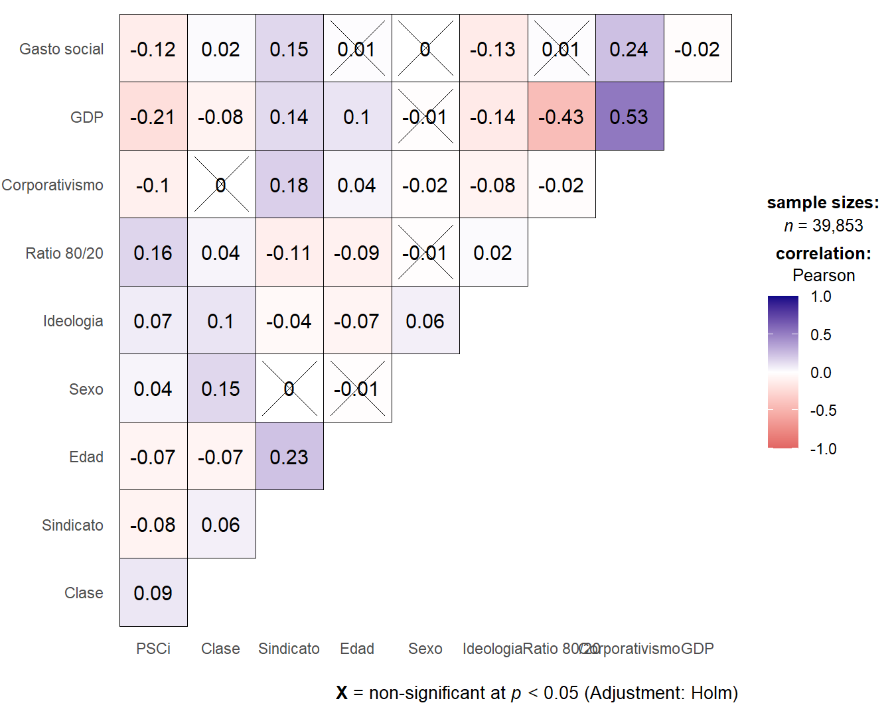
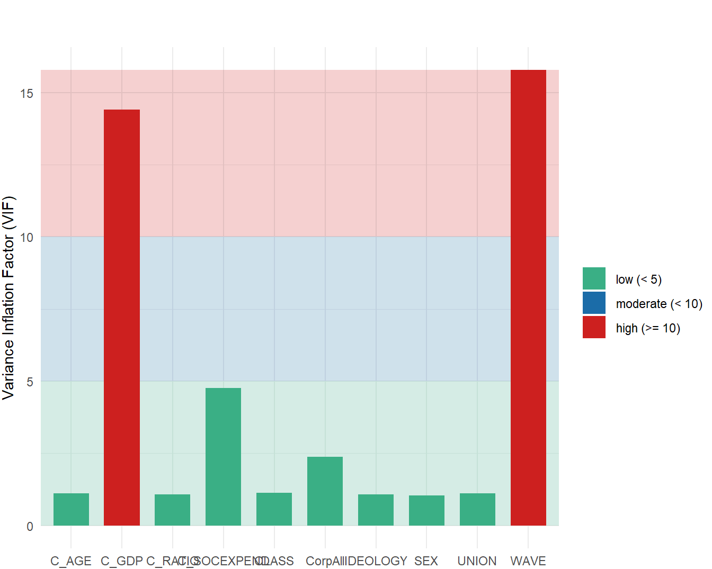

Apéndice B
En el siguiente apéndice se presentan las tablas y gráficos de los análisis estadísticos descriptivos y multivariados.
5.0.3 Tabla bivariada
| Indicador | Valor PSCi | Estadísticos varianza |
|---|---|---|
| Posición de clase | ||
| 1.Capitalistas | 3.29 | |
| 2.Pequeños empleadores | 3.39 | |
| 3.Pequeña burguesia | 3.84 | |
| 4.Expertos directivos | 3.21 | |
| 5.Expertos sin autoridad | 3.41 | |
| 6.Supervisores calificados | 3.58 | |
| 7.Supervisores no calificados | 4.01 | |
| 8.Trabajadores calificados | 3.83 | |
| 9.Trabajadores no calificados | 4.03 | Anova Welch, F(8, 6844.2) = 92.8, p = <0.001, omega^2 = 0.10, n = 39,853 |
| Afiliación sindical | ||
| No | 3.93 | |
| Si | 3.58 | T test, t(37428.30) = 16.33, p = <0.001; Cohen’s d = 0.17, n = 39,853 |
5.0.4 Matriz de correlaciones

Figura 5.1: Matriz de correlaciones de Pearson. Fuente: Elaboración propia en base a ISSP (1999-2019), WIID, ICTWSS y OCDE.
5.0.5 Chequeo multicolinealidad

Figura 5.2: Colinealidad. Las barras más altas (< 5) indican problemas potenciales de colinealidad. Fuente: Elaboración propia en base a ISSP (1999-2019), WIID, ICTWSS y OCDE.